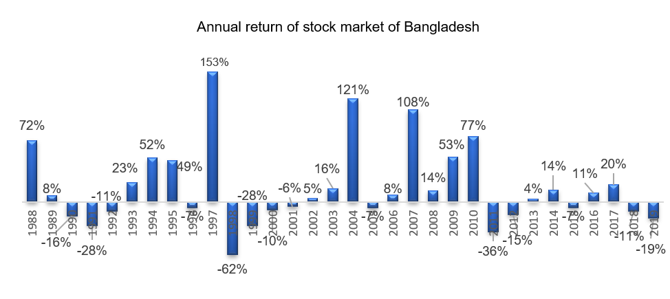

What are benefits I shall get and How my risks are managed?
A mutual fund/unit fund is formed by collecting savings from many investors. The pooled money or the fund then invests in securities i.e., IPOs, stocks, bonds etc. The return generated by these securities are passed to you as dividend and capital gain.
You will get return according to your partial ownership in the fund. The asset manager like Ekush Wealth Management Limited will invest the money on behalf of you. You can sell your investments in mutual fund partially or fully at net asset value (NAV) at any time.

Mutual funds are of two types: open-end (it is called unit fund) and close-end. In our country, close-end funds are listed in Dhaka/Chittagong Stock Exchanges.
Differences between closed and open-end funds are provided below:
| Particular | Open end/unit fund | Closed end |
|---|---|---|
| Fund Size | Unlimited. Asset Manager can increase the fund size depending upon demand from investors. | Fund size is fixed. |
| Life of the fund | There is no maturity period of the fund. | Usually 10 years in Bangladesh. Generally speaking, after maturity period, the fund will be absolved or converted to open end fund. |
| Buy and sell process | You can buy/sell unit fund any time at NAV (Net Asset Value) by providing instruction to Asset Manager. | You need to buy and sell funds in DSE/CSE at market price. |
| Fair pricing | You will get actual value of your investment which is NAV. Investors interest is better protected by this pricing mechanism. | There is chance that market price and NAV are not same. You might not get the real value of your money i.e. NAV. |
In terms of pricing mechanism, unit funds are better. However, it depends on the performance of asset manager- how much return they would be able to provide consistently in long term. In the world, by mutual fund investor understands unit funds. The total size of unit fund in 2019 was USD 87 trillion.
Mutual fund is an artificial entity similar as a company. Mutual fund is formed under Trust and Registration act and after obtaining approval from BSEC.
Just like a person, a fund can act legally. The fund can work or claim its rights under the governing law of Bangladesh.
Difference between a company and unit fund:
| Company is formed under Company Act 1994 | Mutual fund is formed under Registration Act 1882 and Trust Act 1908. |
| Register of Registrar of Joint Stock Companies and Firms (RJSC) and relevant authorities regulates the company. | BSEC is the main regulator of the fund. |
| Nature of Business depends on the company. | The nature of mutual fund is to invest Other People’s Money (OPM) as per the risk and return objectives. |
| Shareholders are the owner of the company represented by their ownership shares. | Investor is the owner of the fund represented by the proportionate units owned. |
| A board of directors is essentially a panel of people who are elected to represent shareholders. They appoint managers and take major decisions to run company affairs. | Board of Trustee is the legal guardian of the fund who is mainly responsible to oversee all the activities on behalf of the investors. Trustee appoints asset manager of the fund. |
| Day to day activities ran by management | Investment and operational activities are run by Asset Manager. |
| Financial results are published quarterly and it is yearly audited. | Financial results are published quarterly and it is yearly audited. In addition, weekly NAV is published in financial express. |
| Board of directors in AGM (annual general meeting) declares dividend. | Trustee decides dividend in the trustee meeting at the year end. |
The benefits of investing in a mutual fund/ unit fund you will get, are:
-
You can enjoy good rate of return: The portfolio manager of Ekush mainly invests your money in different asset classes i.e. fixed income securities, stocks, IPOs etc. Analysts of Ekush are experienced and they try to make proper investment that generates good return in long run. Most of the fund is invested in stock which provides better return in long run.
In the last 20 year, stocks provided 14% CAGR (compound average growth rate) per year meaning that stock market provided compounded return of 14% p.a on average.
This return excludes dividend return (the return is based on CASPI index from 2000 to 2019, source: CSE)

Figure: Annual return of stock market represented by DSE and CSE indices from 1988 to 2019.
Source: DSE/CSE.
- You can reduce your investment risk: Ekush will diversify your money by making investment in different asset classes (among stocks, fixed- income and money market securities) etc. If you directly invest only in stock market, it might not be appropriate for you as stocks are very risky.
- You can get guaranteed IPO allocation: Mutual funds enjoy a 10% (ten percent) privileged quota for all Initial Public Offerings (IPOs). IPOs provides extreme return. Sometimes IPO doubled in few days after trading in the exchanges. You can enjoy the benefit of IPO through funds of Ekush which may not available otherwise.
-
You can reduce tax expense: You can reduce tax by investing in Ekush managed mutual fund. Your dividend income up to BDT 25,000 is tax-free . In addition, profits generated by the mutual fund are tax exempted. Capital gain for individual are also tax free.
In addition, if you invest in Ekush managed fund, the amount will treated as investment allowance just like Sanchaypatra. This will reduce your tax expenses.
If you reached the investment limit for Shanchaypatra, Ekush’s Fund is the right option for you to maximize the return.
- You can buy and sell your investments anytime: You can buy and sell units of Ekush managed funds at NAV at any time. It is considered one of the liquid investment.
A mutual fund invests your money in different stocks/ bonds/ IPOs etc. As the market prices of these securities change over time, the mutual fund makes money. Mutual fund also earns from dividend and interest income from these securities.
Your investment is secured. Your ownership certificates i.e. units of mutual funds are backed by investments in different financial assets i.e. stocks, bonds, IPOs etc. You are the proportionate owner of the Fund represented by the units you buy.
There are four levels of protection of your investment in Ekush’s fund:

The first level of protection comes from regulator i.e. Bangladesh Securities and Exchange Commission (BSEC www.secbd.gov.bd ). Nobody can pool savings without proper license from either from Bangladesh Bank or BSEC. In addition to that, Ekush First Unit Fund is also Government/ BSEC approved.
As a capital market intermediary, Ekush is licensed under BSEC. All the investing activities are regulated and reported to BSEC on monthly and quarterly basis.
The second level of protection comes from trustee i.e. Sandhani Life Insurance Co. Limited who is the legal guardian of the fund. On behalf all the investors, their main work is to protect your interest. In every quarter, Trustee conducts meeting with Ekush to brief the all the investment positions and the financial statements are examined and reviewed by Trustee. The financial statements are published in the newspaper and website on quarterly basis. They are also licensed under BSEC and reports all activities of the fund to BSEC.
Third level of protection comes from Custodian. All the ownership certificates of investment are kept in the vault to custodian i.e. Brac Bank Limited. The detail of all investments is provided on the website (http://ekushwml.com/ekush-first-unit-fund/#portfolio-statement) of Ekush quarterly and published in the National newspapers. If you like to examine the fund’s investment you can easily do that from your home. Mutual fund are more transparent than bank deposits. You will know better about where your money is kept. There is a saying “Buyer’s Beware”. It is your responsibility to know where your money is invested.
Fourth level of protection comes from the Board of Directors of Ekush. The paralysis of body comes from Brain. Board of Directors of company is the brain. All the financial organizations that become weak because of the owner’s personal interest in Bangladesh.
The owners of Ekush are reputed businesspersons who have legacy of ethical business in Bangladesh more than 50 years. Mr. Md. Waliullah, FCA is the Chairman, who is the managing partner of Malek Siddique Wali, a reputed Chartered Accountant Firm. Mr. Swadesh Ranjan Saha FCA is the Vice Chairman who is the owner of Apple Bangladesh and Director of Alpha Rating and Satcom IT Limited. These people are very ethical and has long reputation of conducting business. So, your investment will be in safe hands.
In addition, many of the directors hold CFA designation. CFA is the most prestigious and professional degree in investment. Every CFA charter holder are vowed to protect the interest and work ethically. So, protection from Ekush is the main protection to you.
After your investment in Ekush First Unit Fund, we will let you know your investment results weekly in two ways. We will directly email you detailing your investment results. We will publish NAV of the fund in The Financial Express on each Sunday. For example, if your investment cost is 11.00 per Unit and in the newspaper you see NAV is 12.00, you can easily estimate your profit is 1.00 or return is 9%.
Ekush’s Fund has the highest level of transparency in Bangladesh that no other investment opportunity has. When you make deposit in your bank, you do not what what the bank is doing, whom they are lending. It is impossible for you to understand risks your banker is taking without being an insider.
In contrast, when you invest in Ekush’s fund you can easily check where your money is invested.
We are quarterly uploading financial statements and details of investments. You need not to be a rocket analyst to understand the risk we are taking.
This investment has the highest form of transparency in Bangladesh. You can confidently trust the transparency of your investment.
Your money will be invested in stock market, fixed income, and money market. The portion invested in stock market will fluctuate which is common phenomena in the world. In very short term, like less than one year, there are many factors including market phycology, manipulation, macro-economic factors etc. that affect the stock prices.
However, in long term, stock prices tend to follow the fundamental factors of the company like profitability etc. There is a saying, in short term, stock market is a voting machine and in long term it is weighting machine.
Bangladesh capital market is very small. Small amount of money can influence stock prices. But, if we look at mid to long term i.e. more than 5 years, we can confidently say that good companies with strong fundamentals with favorable buy price will provide best returns.
The tricky part here is finding good companies and more challenging part is finding out reasonable prices to entry. There is a saying that astute businessmen make profits not by selling but at the time of buying.
The market risk of stock will tend to reduce with the time, given skill of asset manager and company invested.
We will diversify the stock investment in different sectors and among different sector into different companies. We are confident, as indicated by our past performance, that will deliver value to generate your long -term wealth.
Our analysts are continuously looking for low risk and high return investments. They are highly professional with the latest knowledge (many of the employees of the company are CFA charter holders) and proven track record.
Our investment philosophy is value investing which is the proven and safest way of making investment.
In conclusion, there is chance of capital loss in very short term. the probability of making loss in long term loss depends mainly on the skill of asset manager and your strength of remaining invested in the fund.
You can make money from the fund in two ways:
- Dividend income: After December 31 of each year, Ekush’s Fund will disburse dividend, if any, to your bank account. At least 70% of the realized profit must be distributed as dividends.
-
Capital gain: After giving dividend, the undistributed portion of the fund will be reinvested. You can sell remaining your investment and enjoy price appreciation which is called capital gain.
Your return will come from four sources which are discussed below:
- Fixed income return: This portion of return will provide cushion to your investment. Ekush after proper research invests in high quality fixed income instruments which are properly disclosed in the financial statements.
- Equity return: The portion of the fund is invested in stock market. As discussed earlier, go to stock market return, per year compounded return is 14% excluding dividend yield.
This is the return of passively management (i.e. index return), active portfolio management should provide higher return.
Ekush believes its active management will add more value to your money. Expected active return generally depends on two things- a) skill of the asset manager, and b) investment strategy of asset manager.
Ekush’s investment philosophy is value investing with long term orientation. It is considered solid, time proven and safest investment approach in the world.
The analyst team and CIO (Chief Investment Officer) of Ekush have decade long experience and proven track record to provide return. We are confident that we will able to maximize your wealth.
- IPO return: This is the quick and big portion of return. Historical returns are astonishing. Some IPOs are doubled or tripled within few days of listing.
- Tax savings: This is automatic return. Whenever, you invest in Ekush managed fund, you will get tax rebate like Sanchaypatra immediately. On an average you can save 3% - 10% tax expenses (depending up on individual tax circumstances) just investing in Ekush managed fund.
In summary, you save tax first, then Fixed Income portion provides you cushion, then stock market along with IPO provides you growth of your money.
If you stay long time with Ekush, your chance of achieving long term financial goals is very high.
Some of the asset managers provided return more than 12%-15% p.a. Such historical performance may not sustain and does not provide any guidance on return expectation from any mutual funds. And there is no guarantee that Mutual Fund investment portfolio will always generate profit or gain- there can be losses, too.
Ekush managed funds have no lock in period. You can buy and sell funds online any working day.
For SIP, you need to hold the investment at least 3 years. However, you can en-cash your SIP investment before your maturity period in emergency situation.
A fund’s NAV goes up or down depending on change in market value of the assets held by the fund. Therefore, if the market value of the assets falls substantially, there is a chance of the NAV going below the face value of the fund. However, such events are expected to be temporary as NAV is projected to grow in the long term with expert portfolio management.